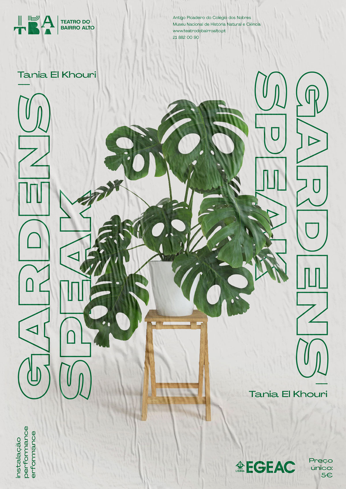
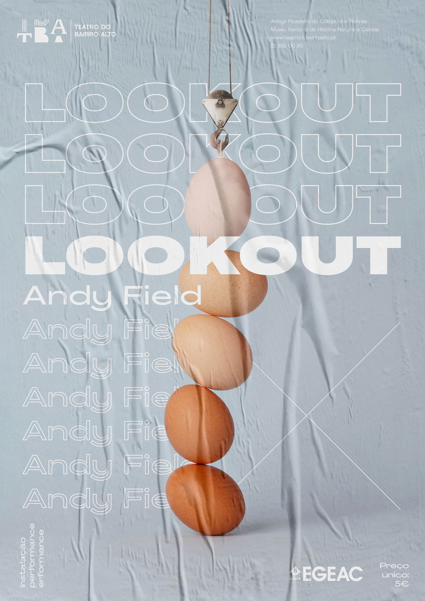
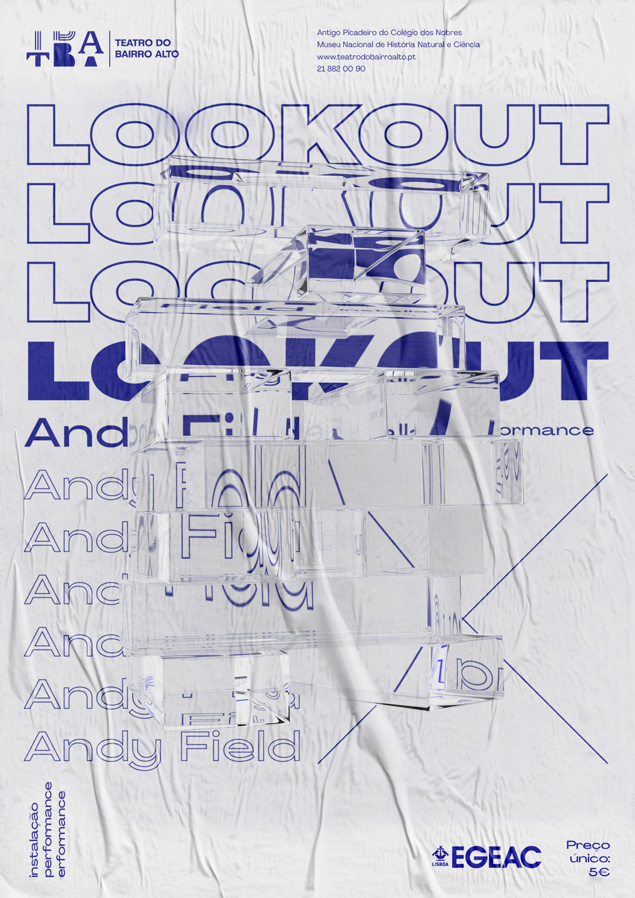
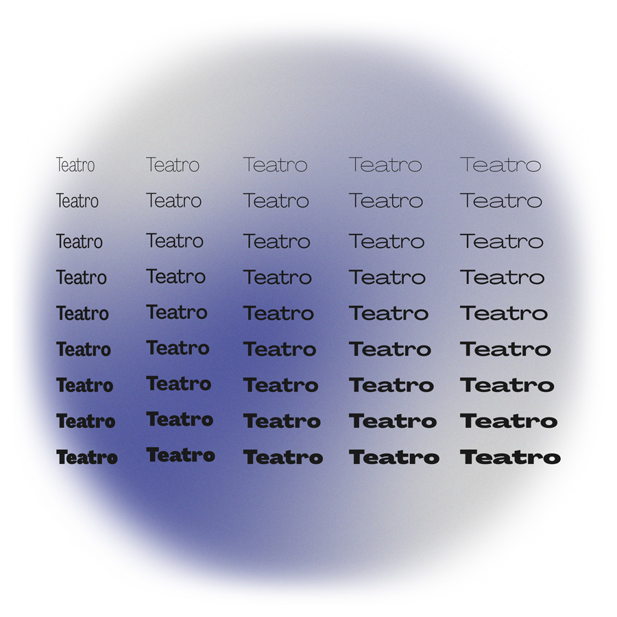
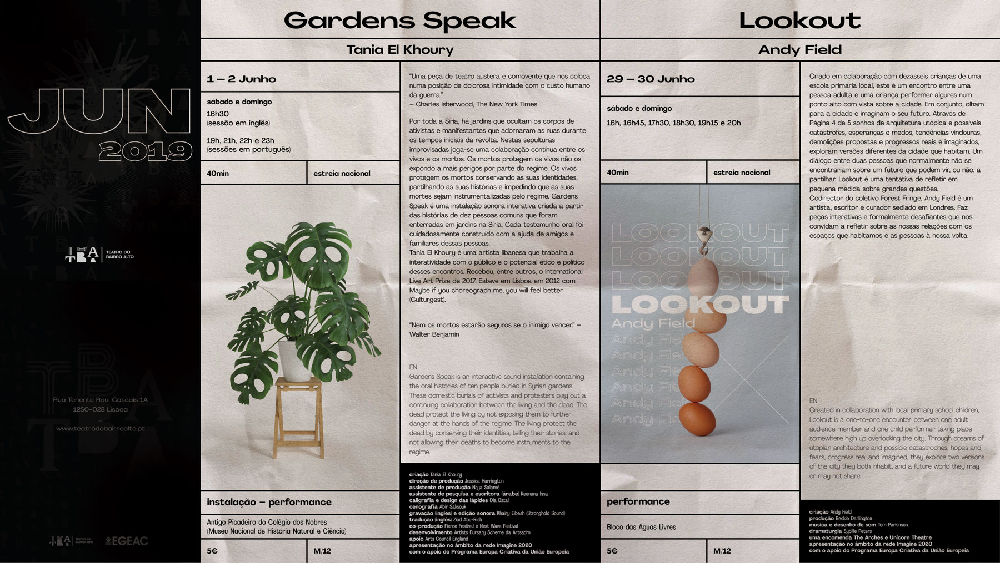

A nova
Identidade gráfica.
O Teatro do Bairro Alto é o diálogo entre a tradição, o emergente e o internacional. A construção da identidade explora a relação entre o imaginário passado e futuro, a convivência entre os três valores para a criação de um TBA múltiplo e evolutivo.


Cartazes:
especulação
e risco.
Os posters apresentam-se como principal espaço de liberdade e experimentação criativa. Num processo de trabalho em evolução contínua onde a especulação formal e o risco adquirem principal protagonismo.
Estas propostas consideram dois caminhos de exploração, tendo em conta a relevância das obras. O primeiro procura construir uma narrativa visual com grande preocupação alegórica e poética. Tendo a mesma retórica presente, o segundo caminho opta por gerar imagens computacionais, para uma produção mais eficiente e rápida.


Fig 1: exemplo do caminho primário. Imagem alegórica sintetiza de maneira física e visual a ideia de arquitecturas utópicas, catástrofes, esperanças e medos.
Fig 2: exemplo do caminho secundário. Ensaio visual, produzido através de software 3D.
Ponte entre o material e o digital.
Tendo em conta a nova missão do TBA e preocupações ambientais, a componente digital assume um papel central na comunicação.
TO BE
Tipografia: variabilidade e adaptabilidade.
Uma tipografia dinâmica e aberta, para uma identidade visual work in progress. Agrandir Variable é uma sans serif variável que celebra a beleza do imperfeito. A sua variabilidade permite alta adaptabilidade a diversos formatos, desde blocos de textos para print e web, até títulos de grande impacto e experimentações visuais.

A interface como quarta parede.
A proposta para a web constrói-se a partir da referência conceptual da quarta parede, o arquétipo do diálogo entre o espectador e a cena. Na interface digital, o ecrã assume-se como a quarta parede. A fronteira imaginária que procura a interacções fluídas entre o usuário e o plataforma digital.
Assim sendo, a arquitetura do website procura assimilar as características do teatro, a estrutura versátil, flexível e sem aditivos formais. O espectador/usuário funciona como parte activa dentro deste diálogo, tendo a possibilidade de navegar livremente pelo conteúdo da plataforma.
espectador = usuário
palco = plataforma digital
quarta parede = interface.
Modular e acessível.
Os módulos de informação mostram-se perante o espectador como elementos independentes, suspensos e sobrepostos à cena principal, procurando agilizar a navegação e facilitar o acesso a diferentes secções de conteúdo.
Tela e ecrã.
No caso das páginas com maior quantidade de informação, os módulos mostram-se como uma tela que emerge e se sobrepõem na totalidade à cena. Utilizando o movimento para uma experiência mais dinâmica e a estrutura bem definida para a facilitar a legibilidade.

Grelha: estrutura para o diálogo.
À semelhança do website, o folheto de programação utiliza uma grelha modular com definição formal em busca de estabelecer uma conexão entre o digital e o impresso, ao mesmo tempo que possibilita uma maior flexibilidade de conjugar os diversos conteúdos programáticos e informativos mantendo a boa legibilidade.